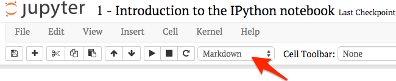
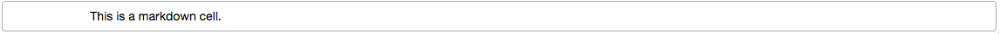
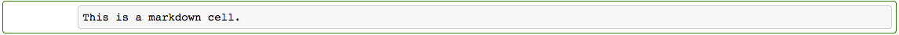
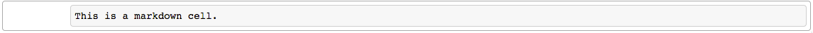
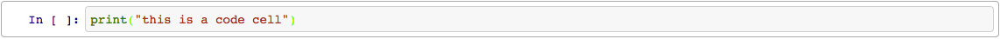
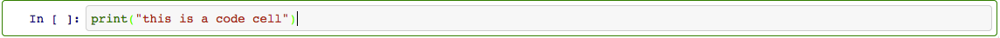
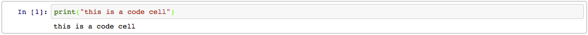
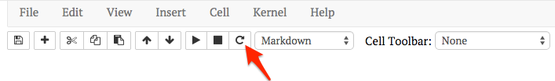

Introduction to Jupyter notebook¶
In this class, you will be using the IPython Notebook to write code and written responses to assignments.
The notebook consists of a series of cells. For example, this text is in what is called a “Markdown cell”. The following cell is a “code cell”:
# this is a code cell
You can tell what the type of a cell is by selecting the cell, and looking at the toolbar at the top of the page. For example, try clicking on this cell. You should see the cell type menu displaying “Markdown”, like this:

Command mode and edit mode¶
In the notebook, there are two modes: edit mode and command mode. By default the notebook begins in command mode. In order to edit a cell, you need to be in edit mode.
Note
When you are in command mode, you can press enter to switch to edit mode. The outline of the cell you currently have selected will turn green, and a cursor will appear.
Note
*When you are in edit mode, you can press escape to switch to command mode. The outline of the cell you currently have selected will turn gray, and the cursor will disappear.
Markdown cells¶
For example, a markdown cell might look like this in command mode (Note: the following few cells are not actually cells – they are images and just look like cells! This is for demonstration purposes only.)

Then, when you press enter, it will change to edit mode:

Now, when we press escape, it will change back to command mode:

However, you’ll notice that the cell no longer looks like it did originally. This is because IPython will only render the markdown when you tell it to. To do this, we need to “run” the cell by pressing Ctrl-Enter, and then it will go back to looking like it did originally:
Code cells¶
For code cells, it is pretty much the same thing. This is what a code cell looks like in command mode (again, the next few cells LOOK like cells, but are just images):

If we press enter, it will change to edit mode:

And pressing escape will also go back to command mode:
If we were to press Ctrl-Enter like we did for the markdown cell, this would actually run the code in the code cell:

Executing cells¶
Code cells can contain any valid Python code in them. When you run the cell, the code is executed and any output is displayed.
Note
You can execute cells with Ctrl-Enter (which will keep the cell selected), or Shift-Enter (which will select the next cell).
Try running the following cell and see what it prints out:
print("Printing cumulative sum from 1-10:")
total = 0
for i in range(1, 11):
total += i
print("Sum of 1 to " + str(i) + " is: " + str(total))
print("Done printing numbers.")
Printing cumulative sum from 1-10:
Sum of 1 to 1 is: 1
Sum of 1 to 2 is: 3
Sum of 1 to 3 is: 6
Sum of 1 to 4 is: 10
Sum of 1 to 5 is: 15
Sum of 1 to 6 is: 21
Sum of 1 to 7 is: 28
Sum of 1 to 8 is: 36
Sum of 1 to 9 is: 45
Sum of 1 to 10 is: 55
Done printing numbers.
You’ll notice that the output beneath the cell corresponds to the print statements in the code. Here is another example, which only prints out the final sum:
total = 0
for i in range(1, 11):
total += i
print(total)
55
Another way to print something out is to have that thing be the last line in the cell. For example, we could rewrite our example above to be:
total = 0
for i in range(1, 11):
total += i
total
55
However, this will not work unless the thing to be displayed is on the last line. For example, if we wanted to print the total sum and then a message after that, this will not do what we want (it will only print “Done computing total.”, and not the total sum itself).
total = 0
for i in range(1, 11):
total += i
total
print("Done computing total.")
Done computing total.
If you are accustomed to Python 2, note that the parentheses are obligatory for the print function in Python 3.
The IPython kernel¶
When you first start a notebook, you are also starting what is called a kernel. This is a special program that runs in the background and executes Python code. Whenever you run a code cell, you are telling the kernel to execute the code that is in the cell, and to print the output (if any).
Just like if you were typing code at the Python interpreter, you need to make sure your variables are declared before you can use them. What will happen when you run the following cell? Try it and see:
a
---------------------------------------------------------------------------
NameError Traceback (most recent call last)
<ipython-input-6-3f786850e387> in <module>
----> 1 a
NameError: name 'a' is not defined
The issue is that the variable a does not exist. Modify the cell above so that a is declared first (for example, you could set the value of a to 1 – or pick whatever value you want). Once you have modified the above cell, you should be able to run the following cell (if you haven’t modified the above cell, you’ll get the same error!):
print("The value of 'a' is: " + str(a))
---------------------------------------------------------------------------
NameError Traceback (most recent call last)
<ipython-input-7-47a0c5d38711> in <module>
----> 1 print("The value of 'a' is: " + str(a))
NameError: name 'a' is not defined
Running the above cell should work, because a has now been declared. To see what variables have been declared, you can use the %whos command:
%whos
Variable Type Data/Info
----------------------------
i int 10
total int 55
If you ran the summing examples from the previous section, you’ll notice that total and i are listed under the %whos command. That is because when we ran the code for those examples, they also modified the kernel state.
(Note that commands beginning with a percent (%) or double percent (%%) are special IPython commands called magics. They will only work in IPython.)
Restarting the kernel¶
It is generally a good idea to periodically restart the kernel and start fresh, because you may be using some variables that you declared at some point, but at a later point deleted that declaration.
Caution
Your code should always be able to work if you run every cell in the notebook, in order, starting from a new kernel.
To test that your code can do this, first restart the kernel by clicking the restart button:

Then, run all cells in the notebook in order by choosing Cell\(\rightarrow\)Run All from the menu above.
Note
There are many keyboard shortcuts for the notebook. To see a full list of these, go to Help\(\rightarrow\)Keyboard Shortcuts.
Note
To learn a little more about what things are what in the IPython Notebook, check out the user interface tour, which you can access by going to Help\(\rightarrow\)User Interface Tour.
Tests¶
For many of the coding assignments we give you, we will provide tests that your code must pass. These will be in one or more cells after the code you need to write, and they must pass for you to get credit. In the following exercise, there is one test cell after the cell where you should put your answer.
Also, be aware that test cells will be included only for coding questions – you’re on your own for questions requiring a written response!
Tip
Implement the function hello and make sure the test cells runs without any errors. You will need to delete the line with raise NotImplementedError, write your own solution, and then re-run the cell before running the test cell. Each time you change code in a cell, you will need to re-run that cell before running any other cells that depend on it!
def hello(name):
"""Returns a message containing "Hello, <name>!",
where <name> is passed in as an argument.
Parameters
----------
name : string
The name of the person to say hello to
Returns
-------
the message containing "Hello, <name>!"
"""
### BEGIN SOLUTION
return "Hello, " + name + "!"
### END SOLUTION
# try running your hello function with your own name and see what
# it returns
hello("YOUR NAME HERE")
'Hello, YOUR NAME HERE!'
# Hint: if the test cell is not passing, but your function seems
# to be showing the right thing, make sure you are actually
# returning a value from your function! You should be using
# `return`, not `print`. For example, this cell should display:
#
# Your function returned: Hello, Reverend Bayes!
#
# and not:
#
# Hello, Reverend Bayes!
# Your function returned: None
message = hello("Reverend Bayes")
print("Your function returned: " + str(message))
Your function returned: Hello, Reverend Bayes!